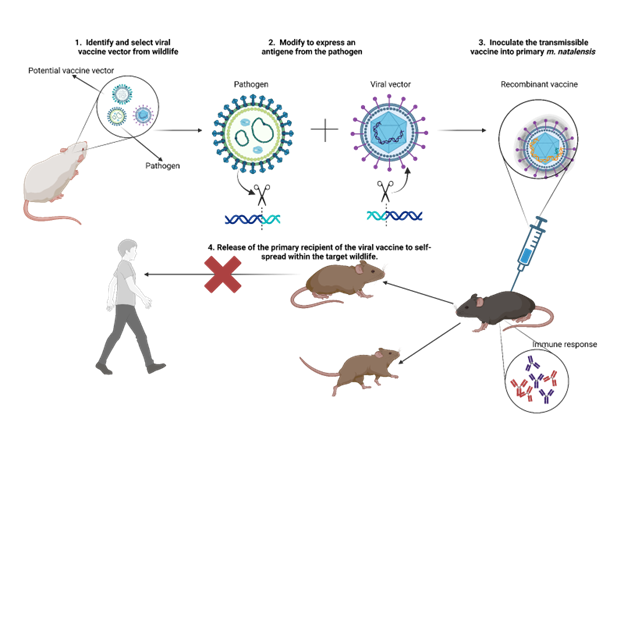
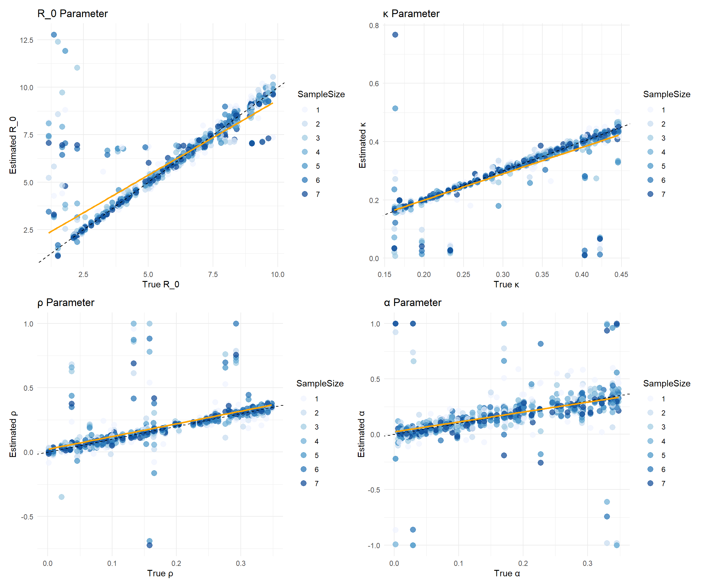
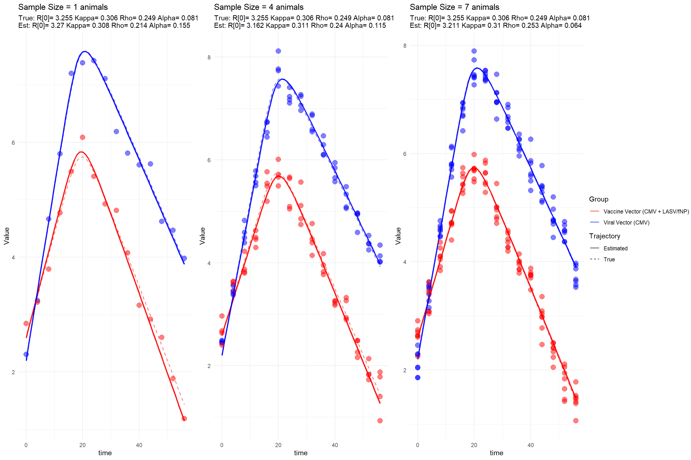
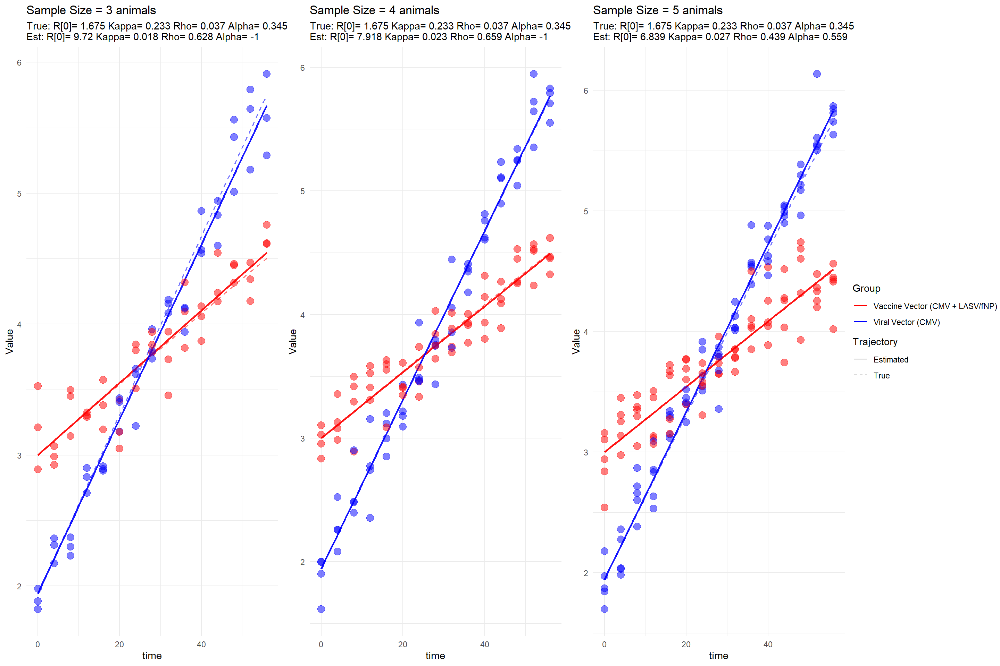

Lassa virus (LASV) is endemic to West Africa, where it is responsible for causing a potentially severe hemorrhagic fever in humans. The primary reservoir of LASV is the rodent Mastomys natalensis, with transmission to humans occurring through contact with the animal’s contaminated urine, feces, blood, or tissue. According to estimates from the World Health Organization (WHO), LASV is responsible for approximately 300,000 cases of illness and 5,000 deaths annually across West Africa. In Nigeria, a significant outbreak in 2022 resulted in 1,067 confirmed cases and 189 fatalities, yielding a case fatality rate (CFR) of 17.7%. By March 2023, there were 784 confirmed cases and 142 deaths in the country. Furthermore, the virus has spread westward, notably into Ghana, where a recent outbreak led to 14 confirmed cases, 97 traced contacts, and one death. Lassa fever continues to be a major public health concern, particularly in impoverished communities in West Africa. Its persistent spread westward underscores the critical need for intensified research efforts and the implementation of effective control measures.
Show the code
# Prepare data for map map_data <- lassa_data %>%group_by(country, city, lat, long) %>%summarize(total_cases =n(),human_cases =sum(host =="human"),rodent_cases =sum(host =="rodent"),avg_fitness =mean(fitness),.groups ='drop' )# Create a color palette for the number of cases pal <-colorBin(palette ="YlOrRd", domain = map_data$total_cases,bins =7 )# Create the map lassa_map <-leaflet(map_data) %>%addTiles() %>%# Add default OpenStreetMap tilessetView(lng =0, lat =8, zoom =5) %>%# Center on West Africa# Add circle markers for each cityaddCircleMarkers(~long, ~lat,radius =~sqrt(total_cases)/3, # Size based on sqrt of casescolor ="black",weight =1,fillColor =~pal(total_cases),fillOpacity =0.7,popup =~paste("<strong>", city, ", ", country, "</strong><br>","Total cases: ", total_cases, "<br>","Human cases: ", human_cases, "<br>","Rodent cases: ", rodent_cases, "<br>","Avg. fitness: ", round(avg_fitness, 2) ) ) %>%# Add a legendaddLegend(position ="bottomright",pal = pal,values =~total_cases,title ="Total Cases",opacity =0.7 )# Save the mapsaveWidget(lassa_map, "lassa_geographic_map.html", selfcontained =TRUE)# Display the map lassa_map
</div>
Given the absence of a human vaccine for LASV, current interventions focus on reducing contact between humans and infected animals, either through behavioral changes or through the mass culling of the rodent reservoir. An alternative and promising approach involves the use of transmissible vaccines to rapidly establish immunity within wild animal reservoir populations, thereby reducing the prevalence of the virus. The key advantage of transmissible vaccines lies in their potential to limit the occurrence of spillover events from rodent reservoirs to human populations while conserving ecological biodiversity. The proposed research seeks to address the urgent need for effective control strategies against LASV in West Africa by evaluating the potential impact of a transmissible vaccine. A prototype transmissible vaccine for LASV has been developed, and the next crucial step involves predicting its efficacy in reducing viral spillover into human populations, particularly in regions such as Western Nigeria and Ghana, where the virus is expanding its range. This objective will be accomplished through the pursuit of the following aims:
Develop and parameterize a within-host models for vaccine replication, immune response, and evolutionary dynamics.

Recombinant Vector Vaccines
Our collaborators in the University of Western Australia run the murine model of Lassa virus infection. The data from this model is used for this study. The following is the mathematical model used for this study:
In this study, I will walk you through my parameter estimation methods and visualizations I have made.
Mathematical Model
We develop an in-host model that describes the competitive interaction of two viral infections, CMV (\(I_1\)) and CMV + LASV NP/flu NP (\(I_2\)), for targets cells (\(S\)). The system is governed by:
\[
\begin{aligned}
\dfrac{d S}{d t} &= -\beta S I_{1} - \beta (1 - \rho) S I_{2} \\
\dfrac{dI_{1}}{dt} &= \beta S I_{1} - \kappa I_{1} \\
\dfrac{dI_{2}}{dt} &= (1 - \rho)\beta S I_{2} - (1 + \alpha)\kappa I_{1}
\end{aligned}
\]
\(I_1\) occurs through contact between target cells and infected cells at rate \(\beta S I\), while \(I_2\) also occurs at a reduced rate \(\beta (1 - \rho) S I\), modulated by the cost of carrying the transgenes- LASV-NP or flu NP. Once infected, \(I_1\) cells are cleared at a rate \(\kappa\), whereas \(I_2\) cells are cleared more rapidly at a rate \((1 + \alpha)\kappa\). The model is designed to represent the biological dynamics involved in developing a recombinant vector vaccine, where a transgene from the target pathogen, LASV, is inserted into a CMV vector. This genetic modification results in a new construct, CMV+LASV NP, which may incur a fitness cost (\(\rho\)) due to the added transgene. We hypothesize that this fitness cost influences both the transmission efficiency and the clearance rate of the recombinant vaccine vector within the host.
We rewrite the model as follows by substituting as expression for \(\beta\)
We simulated the model using randomly selected parameter sets drawn from biologically plausible ranges, generating 100 simulation sets (SimSets), each spanning 0 to 60 days. Based on insights from our murine model, we observed that the true data follows a LogNormal distribution, so we sampled synthetic observations accordingly. For inference, we applied a 1:7 sampling ratio between observed data points and model output. In this analysis, we fixed the noise parameter at to ensure that parameter estimates reliably converge to their true values.
Parameter Estimation
The parameters of interest in this study are the basic reproduction number (\(R_0\)), the rate of infection (\(\kappa\)), the fitness cost associated with carrying a transgene (\(\rho\)), and the additional rate of clearance (\(\alpha\)). The following code conducts 100 simulation runs, each using a unique combination of parameter values randomly selected from a predefined parameter space. Synthetic data are generated for each simulation, from which observational samples are subsequently drawn.
Show the code
### Model definitionmodel <-function(times, state, params) {with(as.list(c(state, params)), { dS <--Kappa * Ro * S * I1 / S0 - Kappa * (1- Rho) * Ro * S * I2 / S0 dI1 <- Kappa * Ro * S * I1 / S0 - Kappa * I1 dI2 <- Kappa * Ro * (1- Rho) * S * I2 / S0 - (1+ Alpha) * Kappa * I2list(c(dS, dI1, dI2)) })}### Simulation parametersset.seed(5)times <-seq(0, 56, by =1)sigma <-0.2# Standard deviation for lognormal noise shcc <-1.2# Shedding coefficientSimSet <-100# Number of simulationslod <-3# Limit of detectionS0 <-1e8# Initial susceptible population# Sample sizes to test (number of animals)sample_sizes <-c(1, 2, 3, 4, 5, 6, 7)### Generate simulated datasetsgenerate_simulation <-function(i) { Ro <-runif(1, 1, 10) Kappa <-runif(1, 0.15, 0.45) Rho <-runif(1, 0, 0.35) Alpha <-runif(1, 0, 0.35) I10 <-sample(1:1000, 1) I20 <-sample(1:1000, 1) state <-c(S = S0, I1 = I10, I2 = I20) out_df <-as.data.frame(ode(y = state, times = times, func = model, parms =c(Ro = Ro, Kappa = Kappa, Rho = Rho, Alpha = Alpha, S0 = S0))) out_df$S[out_df$S <0] <-0 out_df$I1[out_df$I1 <=0] <-0 out_df$I2[out_df$I2 <=0] <-0 out_df <- out_df %>%mutate(SimSet = i, Beta = Kappa * Ro / S0, Kappa = Kappa, Rho = Rho, Ro = Ro,Alpha = Alpha,I1_trans =log10(I1 * shcc), I2_trans =log10(I2 * shcc))return(out_df)}# Run simulationssim_data <-lapply(1:SimSet, generate_simulation)SimData <-bind_rows(sim_data)# Save the simulated data#saveRDS(SimData, file = "C:/Users/jakes/Downloads/ProjectR/Data/Sim_Data.rds")# Load the simulated dataSimData <-readRDS("C:/Users/jakes/Downloads/ProjectR/Data/Sim_Data.rds")# Generate focal datasets with raw observationscreate_focal_datasets <-function(df, sample_sizes) { focal_base <- df %>%filter(time %%4==0) focal_datasets <-list()for (n in sample_sizes) { focal <- focal_basefor (j in1:n) { focal[[paste0("I1_sample_", j)]] <-rnorm(nrow(focal), mean = focal$I1_trans, sd = sigma) focal[[paste0("I2_sample_", j)]] <-rnorm(nrow(focal), mean = focal$I2_trans, sd = sigma) } focal$sample_size <- n focal_datasets[[as.character(n)]] <- focal }return(focal_datasets)}# Apply to all simulationsFocal_by_sample <-list()for (i in1:SimSet) { Focal_by_sample[[i]] <-create_focal_datasets(sim_data[[i]], sample_sizes)}## Save focal datasets#saveRDS(Focal_by_sample, file = "C:/Users/jakes/Downloads/ProjectR/Data/Focal_by_sample.rds")# Load focal datasets
We use maximum likelihood estimation (MLE) to estimate the parameters of interest. The MLE essentially measures the likelihood of observing the data given a set of parameters. The goal is to find the parameter values that maximize this likelihood function. In this case, we are interested in estimating the parameters \(R_0\), \(\kappa\), \(\rho\), and \(\alpha\) based on the simulated data. We used the optimx function to perform the optimization. The optimx function is a wrapper around several optimization algorithms, allowing for more flexibility and options compared to the base R optim function. We used the nlminb method, which is suitable for bounded optimization problems.
# Load the resultsResults <-readRDS("Results.rds")
See the results of the parameter estimation below. The results are saved in a data frame called Results. The columns include the simulation set number, sample size, true and estimated values of the parameters, and the negative log-likelihood (NLL) value.
Let’s make our next visualization. A plot of the estimated parameters against the true parameters. The points are colored by sample size. The dashed line represents a 1:1 relationship, indicating perfect estimation.
Tabset
Show the code
library(ggplot2)library(patchwork) # for combining plotsResults$SampleSize <-factor(Results$SampleSize)# R0 Plotp1 <-ggplot(Results, aes(x = True_Ro, y = Est_Ro, color = SampleSize)) +geom_point(alpha =0.7, size =3) +geom_abline(slope =1, intercept =0, color ="black", linetype ="dashed") +geom_smooth(method ="lm", se =FALSE, color ="orange") +scale_color_brewer(palette ="Blues") +labs(x ="True R_0", y ="Estimated R_0", title ="R_0 Parameter") +theme_minimal()# Kappa Plotp2 <-ggplot(Results, aes(x = True_Kappa, y = Est_Kappa, color = SampleSize)) +geom_point(alpha =0.7, size =3) +geom_abline(slope =1, intercept =0, color ="black", linetype ="dashed") +geom_smooth(method ="lm", se =FALSE, color ="orange") +scale_color_brewer(palette ="Blues") +labs(x ="True κ", y ="Estimated κ", title ="κ Parameter") +theme_minimal()# Rho Plotp3 <-ggplot(Results, aes(x = True_Rho, y = Est_Rho, color = SampleSize)) +geom_point(alpha =0.7, size =3) +geom_abline(slope =1, intercept =0, color ="black", linetype ="dashed") +geom_smooth(method ="lm", se =FALSE, color ="orange") +scale_color_brewer(palette ="Blues") +labs(x ="True ρ", y ="Estimated ρ", title ="ρ Parameter") +theme_minimal()# Alpha Plotp4 <-ggplot(Results, aes(x = True_Alpha, y = Est_Alpha, color = SampleSize)) +geom_point(alpha =0.7, size =3) +geom_abline(slope =1, intercept =0, color ="black", linetype ="dashed") +geom_smooth(method ="lm", se =FALSE, color ="orange") +scale_color_brewer(palette ="Blues") +labs(x ="True α", y ="Estimated α", title ="α Parameter") +theme_minimal()# Combine plots (2x2 layout)(p1 | p2) / (p3 | p4)

The plots above show the estimated parameters against the true parameters. The points are colored by sample size. The dashed line represents a 1:1 relationship, indicating perfect estimation. There is a clear trend in the estimates, with larger sample sizes generally leading to better estimates. The orange line represents the linear regression fit to the data, which can help visualize the relationship between true and estimated values.
Meanwhile, there is also a clear deviation from the 1:1 line, indicating that the estimates are not perfect. This is expected in real-world scenarios, where various factors can influence the accuracy of parameter estimation. We make a plot of true versus errors to visualize the errors in estimation. The errors are calculated as the difference between the estimated and true values of the parameters, divided by. The points are colored by sample size, and the dashed line represents a 0 error line.
Error in Estimation
We can also visualize the errors in estimation. The errors are calculated as the absolute difference between the estimated and true values of the parameters, divided by the true values. The points are colored by sample size, and the dashed line represents a 0 error line. The reason we are interested in the errors is that they provide insight into the accuracy of our parameter estimates. A smaller error indicates a more accurate estimate, while a larger error suggests that the estimate may not be reliable.visualize the errors is to see
From the plots, we can see that the errors in estimation are generally lower for larger sample sizes- at least more visually in the first two panels. This is expected, as larger sample sizes typically provide more information about the underlying population, leading to more accurate estimates. The boxplots also show that the distribution of errors is narrower for larger sample sizes, indicating that the estimates are more consistent across different simulations.
Model Fits
Finally, we can visualize the model fits for each simulation. The plots show the true and estimated trajectories of the viral vectors over time. The points represent the observed data, while the lines represent the model predictions. The dashed lines indicate the true trajectories, while the solid lines indicate the estimated trajectories.
Show the code
library(deSolve)plot_model_fit <-function(sim_index =1, sample_sizes =c(1, 2, 3, 4, 5, 6, 7)) { plots <-list()# Create a common legend data legend_data <-data.frame(time =rep(0, 4),Value =rep(0, 4),Label =rep(c("Viral Vector (CMV)", "Vaccine Vector (CMV + LASV/fNP)"), each =2),LineType =rep(c("True", "Estimated"), 2) )# Create an empty plot with only the legend legend_plot <-ggplot(legend_data, aes(x = time, y = Value, color = Label, linetype = LineType)) +geom_line() +scale_color_manual(values =c("Viral Vector (CMV)"="blue", "Vaccine Vector (CMV + LASV/fNP)"="red")) +scale_linetype_manual(values =c("True"="dashed", "Estimated"="solid")) +guides(color =guide_legend(title ="Group"),linetype =guide_legend(title ="Trajectory")) +theme_void()# Extract the legend legend <-get_legend(legend_plot)for (n in sample_sizes) { ThisSim <- Focal_by_sample[[sim_index]][[as.character(n)]]# Generate model predictions with estimated parameters state <-c(S = ThisSim$S[[1]], I1 = ThisSim$I1[[1]], I2 = ThisSim$I2[[1]]) out <-ode(y = state, times = times, func = model,parms =c(Ro = Results[Results$WhichSim == sim_index & Results$SampleSize == n, "Est_Ro"][1], Kappa = Results[Results$WhichSim == sim_index & Results$SampleSize == n, "Est_Kappa"][1], Rho = Results[Results$WhichSim == sim_index & Results$SampleSize == n, "Est_Rho"][1],Alpha = Results[Results$WhichSim == sim_index & Results$SampleSize == n, "Est_Alpha"][1],S0 =1e8)) pred_df <-as.data.frame(out) pred_df$I1_trans <-log10(pred_df$I1 * shcc) pred_df$I2_trans <-log10(pred_df$I2 * shcc)# Long-format data for true and estimated trajectories true_df <-melt(sim_data[[sim_index]][, c("time", "I1_trans", "I2_trans")], id.vars ="time") %>%rename(Type = variable, Value = value) %>%mutate(LineType ="True",Label =ifelse(Type =="I1_trans", "Viral Vector (CMV)", "Vaccine Vector (CMV + LASV/fNP)")) pred_long <-melt(pred_df[, c("time", "I1_trans", "I2_trans")], id.vars ="time") %>%rename(Type = variable, Value = value) %>%mutate(LineType ="Estimated",Label =ifelse(Type =="I1_trans", "Viral Vector (CMV)", "Vaccine Vector (CMV + LASV/fNP)"))# Plot but remove the legend p <-ggplot() +geom_line(data = true_df, aes(x = time, y = Value, color = Label, linetype = LineType),alpha =0.55, linewidth =0.7) +geom_line(data = pred_long, aes(x = time, y = Value, color = Label, linetype = LineType),alpha =0.9, linewidth =1)# Noisy sample pointsfor (k in1:n) { p <- p +geom_point(data = ThisSim, aes_string(x ="time", y =paste0("I1_sample_", k)), color ="blue", size =3.5, alpha =0.5) +geom_point(data = ThisSim, aes_string(x ="time", y =paste0("I2_sample_", k)), color ="red", size =3.5, alpha =0.5) }# Final touches - but without legend p <- p +labs(title =paste("Sample Size =", n, "animals"),subtitle =paste("True: R[0]=", round(ThisSim$Ro[1], 3), "Kappa=", round(ThisSim$Kappa[1], 3), "Rho=", round(ThisSim$Rho[1], 3),"Alpha=", round(ThisSim$Alpha[1], 3),"\nEst: R[0]=", round(Results[Results$WhichSim == sim_index & Results$SampleSize == n, "Est_Ro"][1], 3),"Kappa=", round(Results[Results$WhichSim == sim_index & Results$SampleSize == n,"Est_Kappa"][1], 3),"Rho=", round(Results[Results$WhichSim == sim_index & Results$SampleSize == n, "Est_Rho"][1], 3),"Alpha=", round(Results[Results$WhichSim == sim_index & Results$SampleSize == n, "Est_Alpha"][1], 3) )) +scale_color_manual(values =c("Viral Vector (CMV)"="blue", "Vaccine Vector (CMV + LASV/fNP)"="red")) +scale_linetype_manual(values =c("True"="dashed", "Estimated"="solid")) +theme_minimal() +theme(legend.position ="none") # Remove the legend from individual plots plots[[as.character(n)]] <- p }# Create a layout with space for the legend# First, create a grid of plots plot_grid <-do.call(arrangeGrob, c(plots, ncol =min(3, length(plots))))# Arrange the plot grid and the legend side by side combined_plot <-grid.arrange( plot_grid, legend, ncol =2, widths =c(0.85, 0.15) # Adjust these values as needed )return(combined_plot)}# You need to add this function to extract the legendget_legend <-function(a_ggplot) { tmp <-ggplot_gtable(ggplot_build(a_ggplot)) leg <-which(sapply(tmp$grobs, function(x) x$name) =="guide-box") legend <- tmp$grobs[[leg]]return(legend)}plot_model_fit(sim_index =98, sample_sizes =c(1, 4, 7))

TableGrob (1 x 2) "arrange": 2 grobs
z cells name grob
1 1 (1-1,1-1) arrange gtable[arrange]
2 2 (1-1,2-2) arrange gtable[guide-box]
TableGrob (1 x 2) "arrange": 2 grobs
z cells name grob
1 1 (1-1,1-1) arrange gtable[arrange]
2 2 (1-1,2-2) arrange gtable[guide-box]
We observe that the model fits well for most simulations, with the estimated trajectories closely following the true trajectories. The observed data points (noisy samples) are also well-aligned with the estimated trajectories. However, there are some deviations in certain simulations, indicating that the model may not perfectly capture all aspects of the underlying dynamics. This is expected in real-world scenarios, where various factors can influence the accuracy of parameter estimation.
`geom_line()`: Each group consists of only one observation.
ℹ Do you need to adjust the group aesthetic?

TableGrob (1 x 2) "arrange": 2 grobs
z cells name grob
1 1 (1-1,1-1) arrange gtable[arrange]
2 2 (1-1,2-2) arrange gtable[guide-box]
In these additional two plots, we identified datasets where the model fitting procedure failed or yielded poor diagnostics. The illustrates a trajectory where the model’s predicted dynamics deviate entirely from the true underlying path. A likely explanation is that most of the sampled viral load measurements in this case fell below the assay’s . When the data provide insufficient resolution—especially during the early growth phase—the model struggles to infer key parameters accurately.
From a biological perspective, for a virus to establish an infection within a host, the \(R_0\) must exceed 1. In the case of recombinant constructs such as CMV expressing LASV NP or Flu NP, the effective reproductive number is moderated by a transmission cost \(\rho\), such that: \[
R_0 (1 - \rho) > 1
\] In the first case, this product is approximately equal to 1, meaning the virus expands only marginally over time. As a result, the system exhibits , making it particularly vulnerable to stochastic loss or misestimation due to detection limitations. This is consistent with the observed failure in model recovery.
The , in contrast, should not necessarily be classified as a poor fit. While the are large, a closer examination reveals that the as sample size increases. This suggests that the model is capable of recovering the correct dynamics, but requires more informative data—either through denser temporal sampling or measurements above the detection threshold—to achieve precise parameter estimates.
Source Code
---title: "Midterm and Final Project"author: "Justice Kessie"date: "2025-03-24"categories: [news, code, analysis]image: "image.jpg"format: html: code-fold: true code-tools: true code-summary: "Show the code" # Optional: label for collapsed code---```{r, include=FALSE}#| warning: false#| message: false# Load required librarieslibrary(tidyverse)library(lubridate)library(leaflet)library(htmlwidgets)library(plotly)library(igraph)library(ape)library(phangorn)library(RColorBrewer)library(leaflet.extras)library(rJava)library(dplyr)library(gridExtra)library(patchwork)library(deSolve)library(dplyr)library(reshape2)library(tidyverse)# Load the datalassa_data <- read.csv('lassa_virus_simulation_data.csv')# Convert date column to Datelassa_data$date <- as.Date(lassa_data$date)```### Description of DataLassa virus (LASV) is endemic to West Africa, where it is responsible for causing a potentially severe hemorrhagic fever in humans. The primary reservoir of LASV is the rodent *Mastomys natalensis*, with transmission to humans occurring through contact with the animal’s contaminated urine, feces, blood, or tissue. According to estimates from the World Health Organization (WHO), LASV is responsible for approximately 300,000 cases of illness and 5,000 deaths annually across West Africa. In Nigeria, a significant outbreak in 2022 resulted in 1,067 confirmed cases and 189 fatalities, yielding a case fatality rate (CFR) of 17.7%. By March 2023, there were 784 confirmed cases and 142 deaths in the country. Furthermore, the virus has spread westward, notably into Ghana, where a recent outbreak led to 14 confirmed cases, 97 traced contacts, and one death. Lassa fever continues to be a major public health concern, particularly in impoverished communities in West Africa. Its persistent spread westward underscores the critical need for intensified research efforts and the implementation of effective control measures.1. <div> </div>```{r}#| warning: false#| message: false# Prepare data for map map_data <- lassa_data %>%group_by(country, city, lat, long) %>%summarize(total_cases =n(),human_cases =sum(host =="human"),rodent_cases =sum(host =="rodent"),avg_fitness =mean(fitness),.groups ='drop' )# Create a color palette for the number of cases pal <-colorBin(palette ="YlOrRd", domain = map_data$total_cases,bins =7 )# Create the map lassa_map <-leaflet(map_data) %>%addTiles() %>%# Add default OpenStreetMap tilessetView(lng =0, lat =8, zoom =5) %>%# Center on West Africa# Add circle markers for each cityaddCircleMarkers(~long, ~lat,radius =~sqrt(total_cases)/3, # Size based on sqrt of casescolor ="black",weight =1,fillColor =~pal(total_cases),fillOpacity =0.7,popup =~paste("<strong>", city, ", ", country, "</strong><br>","Total cases: ", total_cases, "<br>","Human cases: ", human_cases, "<br>","Rodent cases: ", rodent_cases, "<br>","Avg. fitness: ", round(avg_fitness, 2) ) ) %>%# Add a legendaddLegend(position ="bottomright",pal = pal,values =~total_cases,title ="Total Cases",opacity =0.7 )# Save the mapsaveWidget(lassa_map, "lassa_geographic_map.html", selfcontained =TRUE)# Display the map lassa_map`````` </div>```Given the absence of a human vaccine for LASV, current interventions focus on reducing contact between humans and infected animals, either through behavioral changes or through the mass culling of the rodent reservoir. An alternative and promising approach involves the use of transmissible vaccines to rapidly establish immunity within wild animal reservoir populations, thereby reducing the prevalence of the virus. The key advantage of transmissible vaccines lies in their potential to limit the occurrence of spillover events from rodent reservoirs to human populations while conserving ecological biodiversity. The proposed research seeks to address the urgent need for effective control strategies against LASV in West Africa by evaluating the potential impact of a transmissible vaccine. A prototype transmissible vaccine for LASV has been developed, and the next crucial step involves predicting its efficacy in reducing viral spillover into human populations, particularly in regions such as Western Nigeria and Ghana, where the virus is expanding its range. This objective will be accomplished through the pursuit of the following aims:1. Develop and parameterize a within-host models for vaccine replication, immune response, and evolutionary dynamics.{fig-align="right"}Our collaborators in the University of Western Australia run the murine model of Lassa virus infection. The data from this model is used for this study. The following is the mathematical model used for this study:In this study, I will walk you through my parameter estimation methods and visualizations I have made.## Mathematical ModelWe develop an in-host model that describes the competitive interaction of two viral infections, CMV ($I_1$) and CMV + LASV NP/flu NP ($I_2$), for targets cells ($S$). The system is governed by:$$\begin{aligned}\dfrac{d S}{d t} &= -\beta S I_{1} - \beta (1 - \rho) S I_{2} \\\dfrac{dI_{1}}{dt} &= \beta S I_{1} - \kappa I_{1} \\\dfrac{dI_{2}}{dt} &= (1 - \rho)\beta S I_{2} - (1 + \alpha)\kappa I_{1}\end{aligned}$$$I_1$ occurs through contact between target cells and infected cells at rate $\beta S I$, while $I_2$ also occurs at a reduced rate $\beta (1 - \rho) S I$, modulated by the cost of carrying the transgenes- *LASV-NP* or *flu NP.* Once infected, $I_1$ cells are cleared at a rate $\kappa$, whereas $I_2$ cells are cleared more rapidly at a rate $(1 + \alpha)\kappa$. The model is designed to represent the biological dynamics involved in developing a recombinant vector vaccine, where a transgene from the target pathogen, LASV, is inserted into a CMV vector. This genetic modification results in a new construct, CMV+LASV NP, which may incur a fitness cost ($\rho$) due to the added transgene. We hypothesize that this fitness cost influences both the transmission efficiency and the clearance rate of the recombinant vaccine vector within the host.We rewrite the model as follows by substituting as expression for $\beta$$$\begin{aligned}\frac{dS}{dt} &= -\kappa R_0 \frac{S I_1}{S_0} - \kappa (1 - \rho) R_0 \frac{S I_2}{S_0} \\\frac{dI_1}{dt} &= \kappa R_0 \frac{S I_1}{S_0} - \kappa I_1 \\\frac{dI_2}{dt} &= \kappa R_0 (1 - \rho) \frac{S I_2}{S_0} - (1 + \alpha)\kappa I_2\end{aligned}$$```{r}#| fig.caption: "Network diagram of the model: Describes the viral kinetics within a host"library(visNetwork)# Define nodesnodes <-data.frame(id =c("S", "I1", "I2"),label =c("Target cells (S)", "Viral Vector (I1)", "Vaccine Vector (I2)"),color =c("lightblue", "salmon", "lightgreen"),shape ="ellipse")# Define edges (just structural)edges <-data.frame(from =c("S", "S", "I1", "I2"),to =c("I1", "I2", NA, NA),label =c("β * S * I1", "β * (1 - ρ) * S * I2", "−κ * I1", "−(1 + α) * κ * I2"),arrows ="to",stringsAsFactors =FALSE) |>na.omit() # Remove edges with NA targets (or change to 'Removed' node if needed)# Optional: add "Removed" nodenodes <-rbind(nodes, data.frame(id ="R", label ="Clearance", color ="gray", shape ="ellipse"))edges <-rbind(edges, data.frame(from =c("I1", "I2"),to =c("R", "R"),label =c("−κ * I1", "−(1 + α) * κ * I2"),arrows ="to"))# Plot networkvisNetwork(nodes, edges, width ="100%", height ="400px") %>%visEdges(smooth =FALSE) %>%visOptions(highlightNearest =TRUE, nodesIdSelection =TRUE) %>%visLayout(randomSeed =42)```## Experimental DataWe simulated the model using randomly selected parameter sets drawn from biologically plausible ranges, generating 100 simulation sets (SimSets), each spanning 0 to 60 days. Based on insights from our murine model, we observed that the true data follows a LogNormal distribution, so we sampled synthetic observations accordingly. For inference, we applied a 1:7 sampling ratio between observed data points and model output. In this analysis, we fixed the noise parameter at to ensure that parameter estimates reliably converge to their true values.## Parameter EstimationThe parameters of interest in this study are the basic reproduction number ($R_0$), the rate of infection ($\kappa$), the fitness cost associated with carrying a transgene ($\rho$), and the additional rate of clearance ($\alpha$). The following code conducts 100 simulation runs, each using a unique combination of parameter values randomly selected from a predefined parameter space. Synthetic data are generated for each simulation, from which observational samples are subsequently drawn.```{r, eval=TRUE}#| warning: false#| message: false### Model definitionmodel <- function(times, state, params) { with(as.list(c(state, params)), { dS <- -Kappa * Ro * S * I1 / S0 - Kappa * (1 - Rho) * Ro * S * I2 / S0 dI1 <- Kappa * Ro * S * I1 / S0 - Kappa * I1 dI2 <- Kappa * Ro * (1 - Rho) * S * I2 / S0 - (1 + Alpha) * Kappa * I2 list(c(dS, dI1, dI2)) })}### Simulation parametersset.seed(5)times <- seq(0, 56, by = 1)sigma <- 0.2 # Standard deviation for lognormal noise shcc <- 1.2 # Shedding coefficientSimSet <- 100 # Number of simulationslod <- 3 # Limit of detectionS0 <- 1e8 # Initial susceptible population# Sample sizes to test (number of animals)sample_sizes <- c(1, 2, 3, 4, 5, 6, 7)### Generate simulated datasetsgenerate_simulation <- function(i) { Ro <- runif(1, 1, 10) Kappa <- runif(1, 0.15, 0.45) Rho <- runif(1, 0, 0.35) Alpha <- runif(1, 0, 0.35) I10 <- sample(1:1000, 1) I20 <- sample(1:1000, 1) state <- c(S = S0, I1 = I10, I2 = I20) out_df <- as.data.frame(ode(y = state, times = times, func = model, parms = c(Ro = Ro, Kappa = Kappa, Rho = Rho, Alpha = Alpha, S0 = S0))) out_df$S[out_df$S < 0] <- 0 out_df$I1[out_df$I1 <= 0] <- 0 out_df$I2[out_df$I2 <= 0] <- 0 out_df <- out_df %>% mutate(SimSet = i, Beta = Kappa * Ro / S0, Kappa = Kappa, Rho = Rho, Ro = Ro, Alpha = Alpha, I1_trans = log10(I1 * shcc), I2_trans = log10(I2 * shcc)) return(out_df)}# Run simulationssim_data <- lapply(1:SimSet, generate_simulation)SimData <- bind_rows(sim_data)# Save the simulated data#saveRDS(SimData, file = "C:/Users/jakes/Downloads/ProjectR/Data/Sim_Data.rds")# Load the simulated dataSimData <- readRDS("C:/Users/jakes/Downloads/ProjectR/Data/Sim_Data.rds")# Generate focal datasets with raw observationscreate_focal_datasets <- function(df, sample_sizes) { focal_base <- df %>% filter(time %% 4 == 0) focal_datasets <- list() for (n in sample_sizes) { focal <- focal_base for (j in 1:n) { focal[[paste0("I1_sample_", j)]] <- rnorm(nrow(focal), mean = focal$I1_trans, sd = sigma) focal[[paste0("I2_sample_", j)]] <- rnorm(nrow(focal), mean = focal$I2_trans, sd = sigma) } focal$sample_size <- n focal_datasets[[as.character(n)]] <- focal } return(focal_datasets)}# Apply to all simulationsFocal_by_sample <- list()for (i in 1:SimSet) { Focal_by_sample[[i]] <- create_focal_datasets(sim_data[[i]], sample_sizes)}## Save focal datasets#saveRDS(Focal_by_sample, file = "C:/Users/jakes/Downloads/ProjectR/Data/Focal_by_sample.rds")# Load focal datasets``````{r, include=FALSE}SimData <- readRDS("C:/Users/jakes/Downloads/ProjectR/Data/Sim_Data.rds")Focal_by_sample <- readRDS("C:/Users/jakes/Downloads/ProjectR/Data/Focal_by_sample.rds")```We use maximum likelihood estimation (MLE) to estimate the parameters of interest. The MLE essentially measures the likelihood of observing the data given a set of parameters. The goal is to find the parameter values that maximize this likelihood function. In this case, we are interested in estimating the parameters $R_0$, $\kappa$, $\rho$, and $\alpha$ based on the simulated data. We used the `optimx` function to perform the optimization. The `optimx` function is a wrapper around several optimization algorithms, allowing for more flexibility and options compared to the base R `optim` function. We used the `nlminb` method, which is suitable for bounded optimization problems.```{r, eval=FALSE}#| warning: false#| message: false### Likelihood function (no averaging, constant sigma)likelihood_func <- function(parms, sim_index, sample_size) { Ro <- parms[1] Kappa <- parms[2] Rho <- parms[3] Alpha <- parms[4] ThisSim <- Focal_by_sample[[sim_index]][[as.character(sample_size)]] state <- c(S = ThisSim$S[[1]], I1 = ThisSim$I1[[1]], I2 = ThisSim$I2[[1]]) out <- ode(y = state, times = ThisSim$time, func = model, parms = c(Ro = Ro, Kappa = Kappa, Rho = Rho, Alpha = Alpha, S0 = S0)) sim_df <- as.data.frame(out) sim_df$I1_trans <- log10(sim_df$I1 * shcc) sim_df$I2_trans <- log10(sim_df$I2 * shcc) total_loglik <- 0 for (j in 1:sample_size) { I1_obs <- ThisSim[[paste0("I1_sample_", j)]] I2_obs <- ThisSim[[paste0("I2_sample_", j)]] ll_I1 <- ifelse(I1_obs < lod, pnorm(lod, sim_df$I1_trans, sd = sigma, log.p = TRUE), dnorm(I1_obs, sim_df$I1_trans, sd = sigma, log = TRUE)) ll_I2 <- ifelse(I2_obs < lod, pnorm(lod, sim_df$I2_trans, sd = sigma, log.p = TRUE), dnorm(I2_obs, sim_df$I2_trans, sd = sigma, log = TRUE)) total_loglik <- total_loglik + sum(ll_I1) + sum(ll_I2) } return(-total_loglik)}### Run parameter estimation for all simulations and sample sizes# Initialize results dataframeResults <-NULLResults <- data.frame( WhichSim = integer(), SampleSize = integer(), True_Ro = numeric(), True_Kappa = numeric(), True_Rho = numeric(), True_Alpha = numeric(), Est_Ro = numeric(), Est_Kappa = numeric(), Est_Rho = numeric(), Est_Alpha = numeric(), NLL = numeric())## Save Results as rds#saveRDS(Results, file = "Results1.rds")# Parameter estimation functionestimate_parameters <- function(i, n_samples) { ThisSim <- Focal_by_sample[[i]][[as.character(n_samples)]] wrapped_likelihood <- function(parms) { likelihood_func(parms, i, n_samples) } # Optimize opt_result <- optimx(par = c(7, 0.3, 0.1, 0.05), fn = wrapped_likelihood, lower = c(1, 0, -1, -1 ), upper = c(16, 1, 1, 1), method = "nlminb", hessian = TRUE) data.frame(p1 = NA, p2 = NA, p3 = NA, p4 = NA, value = NA) # Return results data.frame( WhichSim = i, SampleSize = n_samples, True_Ro = ThisSim$Ro[1], True_Kappa = ThisSim$Kappa[1], True_Rho = ThisSim$Rho[1], True_Alpha = ThisSim$Alpha[1], Est_Ro = opt_result$p1, Est_Kappa = opt_result$p2, Est_Rho = opt_result$p3, Est_Alpha = opt_result$p4, NLL = opt_result$value )}# For demonstration, run on a subset of simulations (e.g., first 20)num_sims_to_run <- 100for (i in 1:num_sims_to_run) { for (n in sample_sizes) { result <- estimate_parameters(i, n) Results <- rbind(Results, result) cat(sprintf("Completed simulation %d with sample size %d\n", i, n)) }}## Save Results as rds#saveRDS(Results, file = "C:/Users/jakes/Downloads/ProjectR/Data/Results.rds")``````{r}# Load the resultsResults <-readRDS("Results.rds")```See the results of the parameter estimation below. The results are saved in a data frame called `Results`. The columns include the simulation set number, sample size, true and estimated values of the parameters, and the negative log-likelihood (NLL) value.```{r}#| label: results-table#| echo: false#| warning: false#| message: falselibrary(DT)datatable(head(Results, 200),options =list(scrollX =TRUE), # Enables horizontal scrollclass ="display nowrap stripe", # Prevents wrappingrownames =FALSE)```Let's make our next visualization. A plot of the estimated parameters against the true parameters. The points are colored by sample size. The dashed line represents a 1:1 relationship, indicating perfect estimation.### Tabset```{r, fig.width=12, fig.height=10}#| warning: false#| message: false#| fig.label: "parameter-estimation"#| fig.caption: "Parameter estimation results: This plot shows the estimated parameters against the true parameters. The points are colored by sample size. The dashed line represents a 1:1 relationship, indicating perfect estimation."library(ggplot2)library(patchwork) # for combining plotsResults$SampleSize <- factor(Results$SampleSize)# R0 Plotp1 <- ggplot(Results, aes(x = True_Ro, y = Est_Ro, color = SampleSize)) + geom_point(alpha = 0.7, size = 3) + geom_abline(slope = 1, intercept = 0, color = "black", linetype = "dashed") + geom_smooth(method = "lm", se = FALSE, color = "orange") + scale_color_brewer(palette = "Blues") + labs(x = "True R_0", y = "Estimated R_0", title = "R_0 Parameter") + theme_minimal()# Kappa Plotp2 <- ggplot(Results, aes(x = True_Kappa, y = Est_Kappa, color = SampleSize)) + geom_point(alpha = 0.7, size = 3) + geom_abline(slope = 1, intercept = 0, color = "black", linetype = "dashed") + geom_smooth(method = "lm", se = FALSE, color = "orange") + scale_color_brewer(palette = "Blues") + labs(x = "True κ", y = "Estimated κ", title = "κ Parameter") + theme_minimal()# Rho Plotp3 <- ggplot(Results, aes(x = True_Rho, y = Est_Rho, color = SampleSize)) + geom_point(alpha = 0.7, size = 3) + geom_abline(slope = 1, intercept = 0, color = "black", linetype = "dashed") + geom_smooth(method = "lm", se = FALSE, color = "orange") + scale_color_brewer(palette = "Blues") + labs(x = "True ρ", y = "Estimated ρ", title = "ρ Parameter") + theme_minimal()# Alpha Plotp4 <- ggplot(Results, aes(x = True_Alpha, y = Est_Alpha, color = SampleSize)) + geom_point(alpha = 0.7, size = 3) + geom_abline(slope = 1, intercept = 0, color = "black", linetype = "dashed") + geom_smooth(method = "lm", se = FALSE, color = "orange") + scale_color_brewer(palette = "Blues") + labs(x = "True α", y = "Estimated α", title = "α Parameter") + theme_minimal()# Combine plots (2x2 layout)(p1 | p2) / (p3 | p4)```The plots above show the estimated parameters against the true parameters. The points are colored by sample size. The dashed line represents a 1:1 relationship, indicating perfect estimation. There is a clear trend in the estimates, with larger sample sizes generally leading to better estimates. The orange line represents the linear regression fit to the data, which can help visualize the relationship between true and estimated values.Meanwhile, there is also a clear deviation from the 1:1 line, indicating that the estimates are not perfect. This is expected in real-world scenarios, where various factors can influence the accuracy of parameter estimation. We make a plot of true versus errors to visualize the errors in estimation. The errors are calculated as the difference between the estimated and true values of the parameters, divided by. The points are colored by sample size, and the dashed line represents a 0 error line.## Error in EstimationWe can also visualize the errors in estimation. The errors are calculated as the absolute difference between the estimated and true values of the parameters, divided by the true values. The points are colored by sample size, and the dashed line represents a 0 error line. The reason we are interested in the errors is that they provide insight into the accuracy of our parameter estimates. A smaller error indicates a more accurate estimate, while a larger error suggests that the estimate may not be reliable.visualize the errors is to see```{r, fig.width=15, fig.height=10}#| fig.label: "parameter-estimation-errors"#| fig.caption: "Parameter estimation errors: This plot shows the errors in estimation. The errors are calculated as the difference between the estimated and true values of the parameters, divided by the true values. The points are colored by sample size, and the dashed line represents a 0 error line."#| warning: false#| message: falseResults <- Results %>% mutate( Error_Ro = abs(Est_Ro - True_Ro) / True_Ro, Error_Kappa = abs(Est_Kappa - True_Kappa) / True_Kappa, Error_Rho = abs(Est_Rho - True_Rho) / True_Rho, Error_Alpha = abs(Est_Alpha - True_Alpha) / True_Alpha )library(ggplot2)library(gridExtra) # For side-by-side plot layoutplot_errors_boxplot <- function(results_df, sample_sizes) { results_df$SampleSize <- factor(results_df$SampleSize) plot_list <- list() for (param in c("R0", "Kappa", "Rho", "Alpha")) { if (param == "R0") { error_col <- "Error_Ro" title_label <- expression(R[0]) } else if (param == "Kappa") { error_col <- "Error_Kappa" title_label <- expression(kappa) } else if (param == "Rho") { error_col <- "Error_Rho" title_label <- expression(rho) } else { error_col <- "Error_Alpha" title_label <- expression(alpha) } p <- ggplot(data = results_df, aes_string(x = "SampleSize", y = error_col, fill = "SampleSize")) + geom_boxplot(color = "black", size = 1.2, alpha = 0.8, outlier.shape = 21, outlier.fill = "white") + scale_fill_brewer(palette = "Set2") + labs( x = "Sample Size", y = paste("Error in Estimated", param), title = paste(param) ) + theme_minimal(base_size = 14) + theme( plot.title = element_text(hjust = 0.5, face = "bold"), axis.title = element_text(face = "bold"), legend.position = "none", panel.background = element_rect(color = "black", fill = "white", size = 1.2), plot.background = element_rect(color = "gray40", fill = NA, size = 1), panel.border = element_rect(color = "black", fill = NA, size = 1.2) ) plot_list[[param]] <- p } return(plot_list)}# Filter dataResults_Error <- Results %>% filter( Error_Ro <= 0.5, Error_Kappa <= 0.5, Error_Rho <= 0.5, Error_Alpha <= 0.5 )# Create and display plotsplot_list_boxplot <- plot_errors_boxplot(Results_Error, Results$SampleSize)# Arrange them side-by-side with framesgrid.arrange( plot_list_boxplot$R0, plot_list_boxplot$Kappa, plot_list_boxplot$Rho, plot_list_boxplot$Alpha, nrow = 1)```From the plots, we can see that the errors in estimation are generally lower for larger sample sizes- at least more visually in the first two panels. This is expected, as larger sample sizes typically provide more information about the underlying population, leading to more accurate estimates. The boxplots also show that the distribution of errors is narrower for larger sample sizes, indicating that the estimates are more consistent across different simulations.## Model FitsFinally, we can visualize the model fits for each simulation. The plots show the true and estimated trajectories of the viral vectors over time. The points represent the observed data, while the lines represent the model predictions. The dashed lines indicate the true trajectories, while the solid lines indicate the estimated trajectories.```{r, fig.width=15, fig.height=10}#| warning: false#| message: falselibrary(deSolve)plot_model_fit <- function(sim_index = 1, sample_sizes = c(1, 2, 3, 4, 5, 6, 7)) { plots <- list() # Create a common legend data legend_data <- data.frame( time = rep(0, 4), Value = rep(0, 4), Label = rep(c("Viral Vector (CMV)", "Vaccine Vector (CMV + LASV/fNP)"), each = 2), LineType = rep(c("True", "Estimated"), 2) ) # Create an empty plot with only the legend legend_plot <- ggplot(legend_data, aes(x = time, y = Value, color = Label, linetype = LineType)) + geom_line() + scale_color_manual(values = c("Viral Vector (CMV)" = "blue", "Vaccine Vector (CMV + LASV/fNP)" = "red")) + scale_linetype_manual(values = c("True" = "dashed", "Estimated" = "solid")) + guides(color = guide_legend(title = "Group"), linetype = guide_legend(title = "Trajectory")) + theme_void() # Extract the legend legend <- get_legend(legend_plot) for (n in sample_sizes) { ThisSim <- Focal_by_sample[[sim_index]][[as.character(n)]] # Generate model predictions with estimated parameters state <- c(S = ThisSim$S[[1]], I1 = ThisSim$I1[[1]], I2 = ThisSim$I2[[1]]) out <- ode(y = state, times = times, func = model, parms = c(Ro = Results[Results$WhichSim == sim_index & Results$SampleSize == n, "Est_Ro"][1], Kappa = Results[Results$WhichSim == sim_index & Results$SampleSize == n, "Est_Kappa"][1], Rho = Results[Results$WhichSim == sim_index & Results$SampleSize == n, "Est_Rho"][1], Alpha = Results[Results$WhichSim == sim_index & Results$SampleSize == n, "Est_Alpha"][1], S0 = 1e8)) pred_df <- as.data.frame(out) pred_df$I1_trans <- log10(pred_df$I1 * shcc) pred_df$I2_trans <- log10(pred_df$I2 * shcc) # Long-format data for true and estimated trajectories true_df <- melt(sim_data[[sim_index]][, c("time", "I1_trans", "I2_trans")], id.vars = "time") %>% rename(Type = variable, Value = value) %>% mutate(LineType = "True", Label = ifelse(Type == "I1_trans", "Viral Vector (CMV)", "Vaccine Vector (CMV + LASV/fNP)")) pred_long <- melt(pred_df[, c("time", "I1_trans", "I2_trans")], id.vars = "time") %>% rename(Type = variable, Value = value) %>% mutate(LineType = "Estimated", Label = ifelse(Type == "I1_trans", "Viral Vector (CMV)", "Vaccine Vector (CMV + LASV/fNP)")) # Plot but remove the legend p <- ggplot() + geom_line(data = true_df, aes(x = time, y = Value, color = Label, linetype = LineType), alpha = 0.55, linewidth = 0.7) + geom_line(data = pred_long, aes(x = time, y = Value, color = Label, linetype = LineType), alpha = 0.9, linewidth = 1) # Noisy sample points for (k in 1:n) { p <- p + geom_point(data = ThisSim, aes_string(x = "time", y = paste0("I1_sample_", k)), color = "blue", size = 3.5, alpha = 0.5) + geom_point(data = ThisSim, aes_string(x = "time", y = paste0("I2_sample_", k)), color = "red", size = 3.5, alpha = 0.5) } # Final touches - but without legend p <- p + labs(title = paste("Sample Size =", n, "animals"), subtitle = paste( "True: R[0]=", round(ThisSim$Ro[1], 3), "Kappa=", round(ThisSim$Kappa[1], 3), "Rho=", round(ThisSim$Rho[1], 3), "Alpha=", round(ThisSim$Alpha[1], 3), "\nEst: R[0]=", round(Results[Results$WhichSim == sim_index & Results$SampleSize == n, "Est_Ro"][1], 3), "Kappa=", round(Results[Results$WhichSim == sim_index & Results$SampleSize == n,"Est_Kappa"][1], 3), "Rho=", round(Results[Results$WhichSim == sim_index & Results$SampleSize == n, "Est_Rho"][1], 3), "Alpha=", round(Results[Results$WhichSim == sim_index & Results$SampleSize == n, "Est_Alpha"][1], 3) )) + scale_color_manual(values = c("Viral Vector (CMV)" = "blue", "Vaccine Vector (CMV + LASV/fNP)" = "red")) + scale_linetype_manual(values = c("True" = "dashed", "Estimated" = "solid")) + theme_minimal() + theme(legend.position = "none") # Remove the legend from individual plots plots[[as.character(n)]] <- p } # Create a layout with space for the legend # First, create a grid of plots plot_grid <- do.call(arrangeGrob, c(plots, ncol = min(3, length(plots)))) # Arrange the plot grid and the legend side by side combined_plot <- grid.arrange( plot_grid, legend, ncol = 2, widths = c(0.85, 0.15) # Adjust these values as needed ) return(combined_plot)}# You need to add this function to extract the legendget_legend <- function(a_ggplot) { tmp <- ggplot_gtable(ggplot_build(a_ggplot)) leg <- which(sapply(tmp$grobs, function(x) x$name) == "guide-box") legend <- tmp$grobs[[leg]] return(legend)}plot_model_fit(sim_index = 98, sample_sizes = c(1, 4, 7))plot_model_fit(sim_index = 87, sample_sizes = c(1, 4, 7))```We observe that the model fits well for most simulations, with the estimated trajectories closely following the true trajectories. The observed data points (noisy samples) are also well-aligned with the estimated trajectories. However, there are some deviations in certain simulations, indicating that the model may not perfectly capture all aspects of the underlying dynamics. This is expected in real-world scenarios, where various factors can influence the accuracy of parameter estimation.```{r, fig.width=15, fig.height=10}plot_model_fit(sim_index = 23, sample_sizes = c(3, 4, 5))plot_model_fit(sim_index = 60, sample_sizes = c(3, 4, 5))```In these additional two plots, we identified datasets where the model fitting procedure failed or yielded poor diagnostics. The \textbf{first plot} illustrates a trajectory where the model's predicted dynamics deviate entirely from the true underlying path. A likely explanation is that most of the sampled viral load measurements in this case fell below the assay’s \textit{limit of detection (LOD)}. When the data provide insufficient resolution—especially during the early growth phase—the model struggles to infer key parameters accurately.From a biological perspective, for a virus to establish an infection within a host, the \textit{basic reproductive number} $R_0$ must exceed 1. In the case of recombinant constructs such as CMV expressing LASV NP or Flu NP, the effective reproductive number is moderated by a transmission cost $\rho$, such that:$$R_0 (1 - \rho) > 1$$In the first case, this product is approximately equal to 1, meaning the virus expands only marginally over time. As a result, the system exhibits \textit{slow growth}, making it particularly vulnerable to stochastic loss or misestimation due to detection limitations. This is consistent with the observed failure in model recovery.The \textbf{second plot}, in contrast, should not necessarily be classified as a poor fit. While the \textit{relative errors in parameter estimation} are large, a closer examination reveals that the \textit{predicted and true trajectories begin to converge} as sample size increases. This suggests that the model is capable of recovering the correct dynamics, but requires more informative data—either through denser temporal sampling or measurements above the detection threshold—to achieve precise parameter estimates.